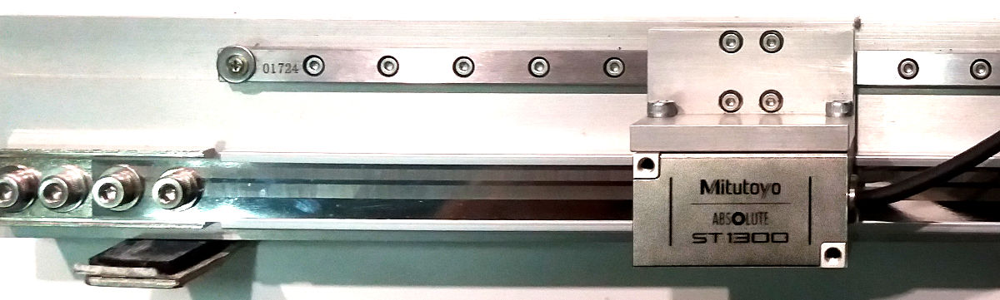
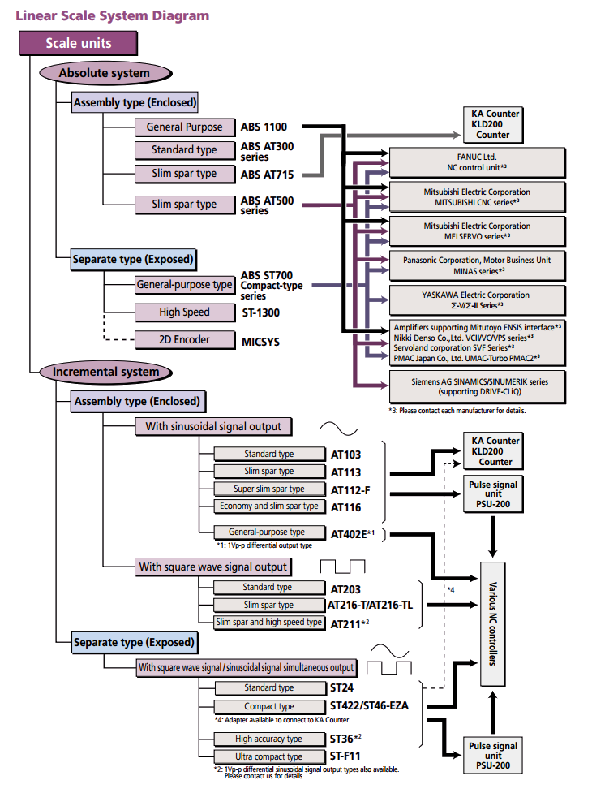
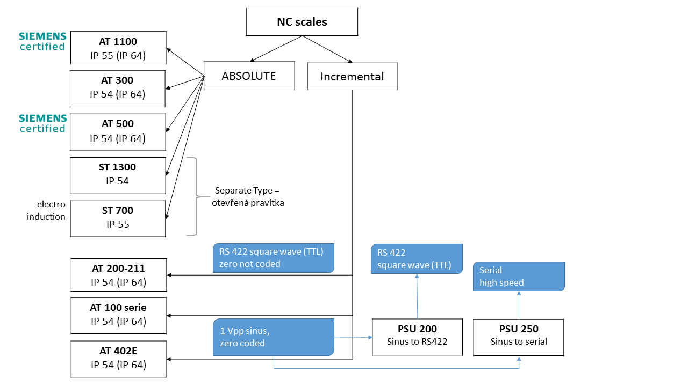
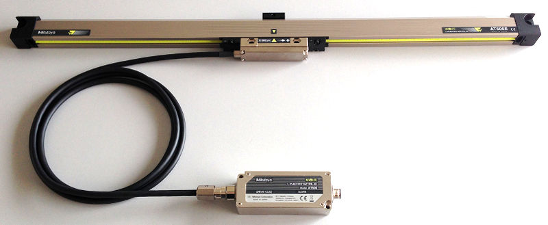
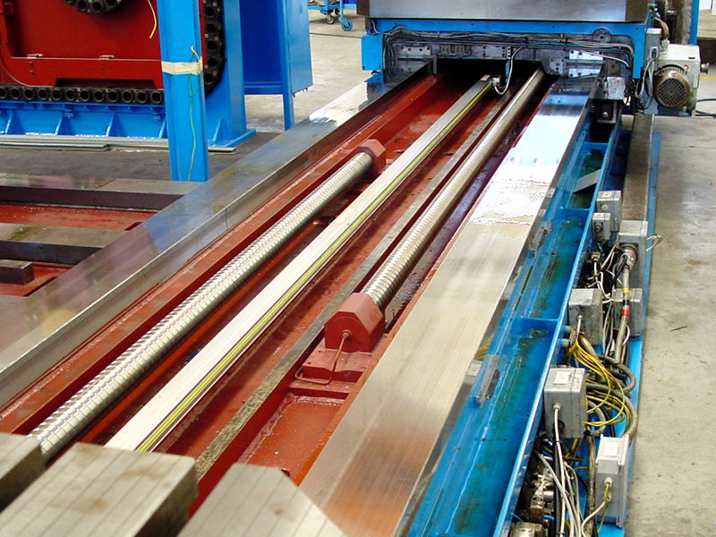
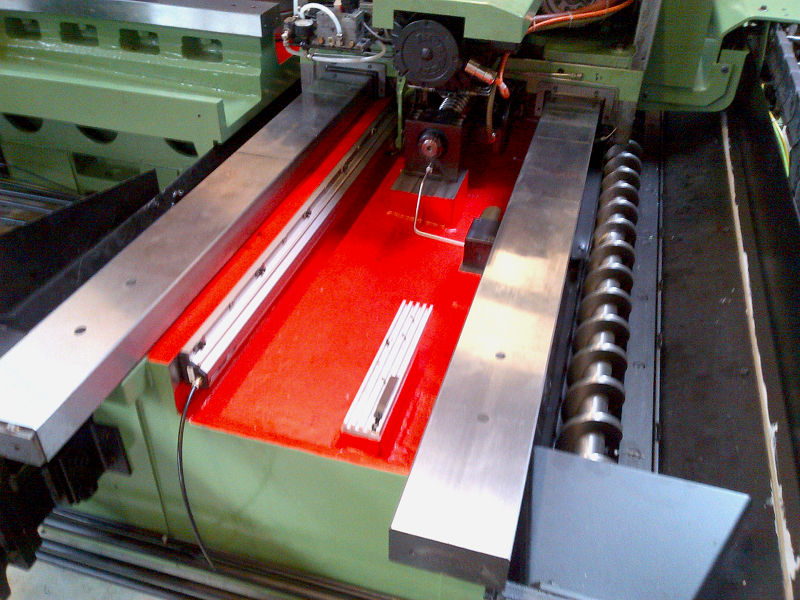
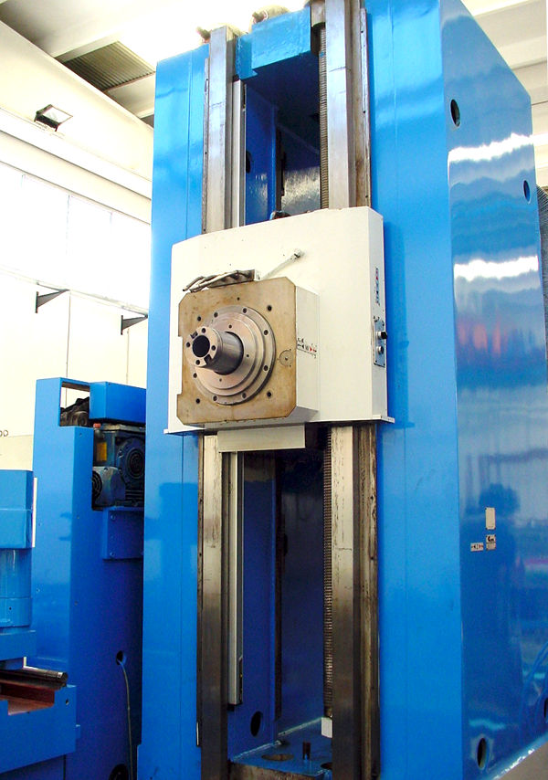
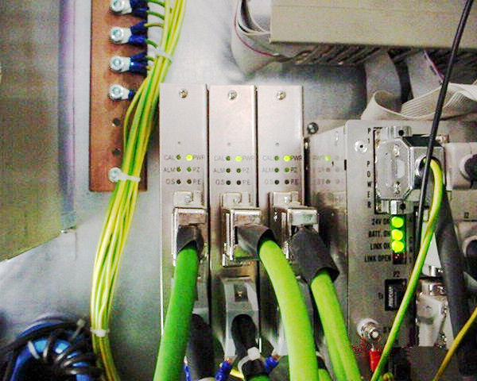

Lineární pravítka pro NC systémy

Lineární pravítka pro NC (numeric control) systémy řízení se vyznačují dvěma základními vlastnostmi:
- výstupem odpovídajícím některému ze standardů odměřovacích systémů pro NC stroje, tj. RS 422 (=binar TTL), sinus 1V pp, resp. DRIVE CliQ (Siemens), Fanuc, Mitusbichi pro absolute pravítek.
- často jedinečnou konstrukcí umožňující ideální zástavbu do mechanického systému stroje. Toto se týká zejména otevřených typů pravítek.
Na rozdíl od DRO systémů jsou NC pravítka zapojena přímo do systému pohonu stroje, kde obvykle tvoří základní zpětnovazební prvek. Jejich přesnost a spolehlivost tím pádem přímo ovlivňuje funkčnost celého pohonu a provozuschopnost stroje.
Zapouzdřená pravítka (značení AT, Assembly Type), umožňují jednodušší použití a systém zapouzdření zároveň poskytuje dostatečnou ochranu funkčním částem pravítka, tedy stupnici (často skleněné) a snímací hlavě. Jedná se o ochranu jak před mechanickým poškozením při montáži nebo provozu, tak před znečištěním z pracovního prostředí (mechanické nečistoty a prach, olej, pracovní kapaliny). Standardní stupeň krytí těchto pravítek je IP54.
Odolnost proti možnému znečištění je možné dále zvýšit přetlakováním vnitřního prostoru pravítka upraveným stlačeným vzduchem.
Otevřená pravítka (značení ST, Separate Type) nemají mezi pravítkem a snímací hlavou žádný dotyk, při pohybu tak nevznikají jakékoliv přídavné síly. Otevřené typy pravítek se mj. používají u nejpřesnějších systémů, např. v oboru výroby polovodičů. Všechny Mitutoyo 3D měřící stroje jsou rovněž vybaveny otevřenými typy odměřovacích pravítek. Otevřené systémy se však používají i při realizaci odměřování na velkých délkách (až do 12 m) a umožňují snadné použití snímacích více hlav na jednom pravítku, čímž může být realizováno snímání polohy více částí nezávisle se pohybujících na jednom pravítku.
Mnohá z Mitutoyo NC pravítek jsou přímým ekvivalentem lineárních pravítek jiných výrobců. To s výhodou můžete využít při realizaci oprav, rekonstrukcí i návrhu nových strojů.
V případě zájmu nás kontaktujte s přímým technickým požavkem.
Přehled typových řad NC pravítek z hlediska krytí IP:
Poznámky:
- zvýšeného krytí IP 64 se dosahuje pomocí přetlakování vnitřního prostoru pravítka upraveným stlačeným vzduchem.
- pravítkem s nejvyšším krytím je typ AT-715 s krytím IP 67. Jedná se o ABSOLUTE pravítko indukčního typu primárně určené pro DRO systémy. Jeho použití pro jiné aplikace vyžadující vysoké krytí však není vyloučeno. Rozlišitelnost 1 µm, efektivní délka do 3 m.
Připojení na řídící systém
Mitutoyo NC pravítka je možné přímo připojit na řídící systémy následujících výrobců:
- FANUC
- Panasonic
- Mitsubichi Electric
- Yaskawa
- SIEMENS

Pravítko typu AT-500 s I/F boxem rozhraní DRIVE CLiQ pro přímé připojení k SIEMENS řídícímu systému (SINAMICS, SIMOTION, SINUMERIK).
AT-524: rozlišení 0,01 µm、 AT-527: rozlišení 0,001 µm. Délkové rozsahy 100 - 2 200 mm. Uvedená pravítka jsou na seznamu certifikovaných snímačů firmy SIEMENS.
Příklady realizovaných řešení


Příklad montáže ABSOLUTE pravítka AT-1100.
Za pozornost stojí přetlakování vnitřního prostoru pravítka vzduchem přivedeným ze strany čela pouzdra (černá hadička)
z důvodu zajištění větší ochrany před možným vniknutím nečistot (zvýšení stupně krytí z IP55 na IP64 = IEC529).

Vertikálně umístěné pravítko u levé části vedení.

Na levé straně tři jednotky PSU-200 (osy X, Y, Z) pro konverzi sinusového signálu z pavítek série AT-100 na obdélníkový.
Zelené kabely jsou přívody z pravítek, dole pod nimi konektory MR-20RM (Honda Tsushin) pro připojení k NC řízení.